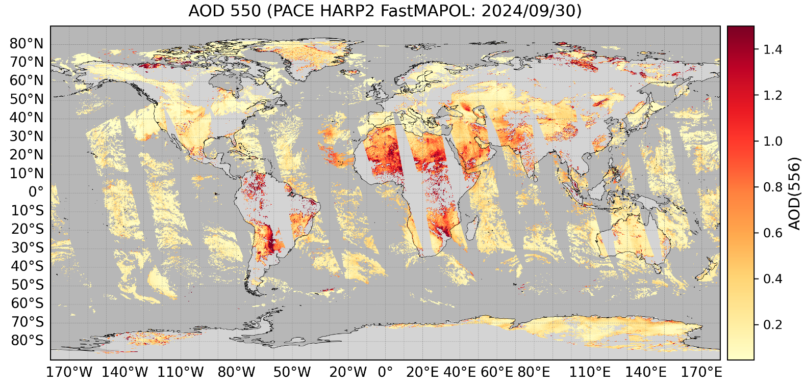
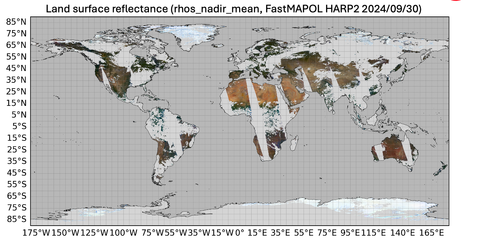

6 HARP2 Aerosol, OCEAN and LAND Product Validation (V4)
PACE, Polarization, Multi-angle, Aerosol, Ocean Color, Deep Learning
This page summarizes validation results for aerosol and surface products retrieved from the PACE multi-angle polarimeters using the FastMAPOL algorithm, with emphasis on HARP2 aerosol optical properties, ocean remote-sensing reflectance (\(R_{rs}\)) and land surface reflectance (\(\rho_s\)).
FastMAPOL performs coupled aerosol–surface retrievals using an optimal-estimation framework accelerated by deep neural network forward models. The validation efforts on HARP2 is ongoing, this page provide the validation plan following the work by Gao et al. (2026). More results will be updated on the PACE FastMAPOL validation page.
6.1 Summary Information
- FastMAPOL version: v4.0
- Data period: 2024/03–2025/12
- Reference: AERONET v3, Level 1.5
6.2 Retrieval Products to be evaluated (ongoing)
Aerosol - Total, fine-mode, and coarse-mode aerosol optical depth (AOD) - Total, fine-mode, and coarse-mode single-scattering albedo (SSA)
Ocean - Ocean remote-sensing reflectance (\(R_{rs}\))
LAND - Land surface reflectance (\(R_{rs}\)) - ## Validation Strategy
Validation is organized into three levels similar to SPEXone (Gao et al. (2026)):
Global Level-3 assessment
Evaluate large-scale spatial and seasonal patterns as shown below.Global aerosol validation
Compare retrievals with AERONET observationsJoint aerosol–ocean validation
Evaluate aerosol and \(R_{rs}\) simultaneously using AERONET-OC matchups, study the mutual dependencies on the retrieval uncertainties.
The objective is to assess both the physical realism of the retrieved fields and the consistency of aerosol and ocean products.
6.3 Global Level-3 Products
Aerosol Products (556 nm)
Global distributions of total, fine-mode, and coarse-mode AOD and SSA at 556 nm:

LAND Products
Global distributions of \(\rho_{s}\) in RGB (667, 556, 443 nm):

The retrieved \(\rho_s\) contains both spectral and angular dimensions. The results shown here represent the angular mean after BRDF correction (rhos_nadir_mean).
Key result:
The global distributions show realistic spatial and seasonal patterns, indicating effective separation of atmospheric and surface retrieval components. Over ocean, AOD shows good consistency with AERONET when using the best-quality retrievals (quality flags 0 and 1). Over land, however, retrieved AOD is generally higher than AERONET observations. For more details, please refer to the Version 4 release notes.